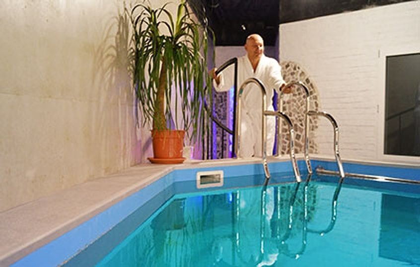
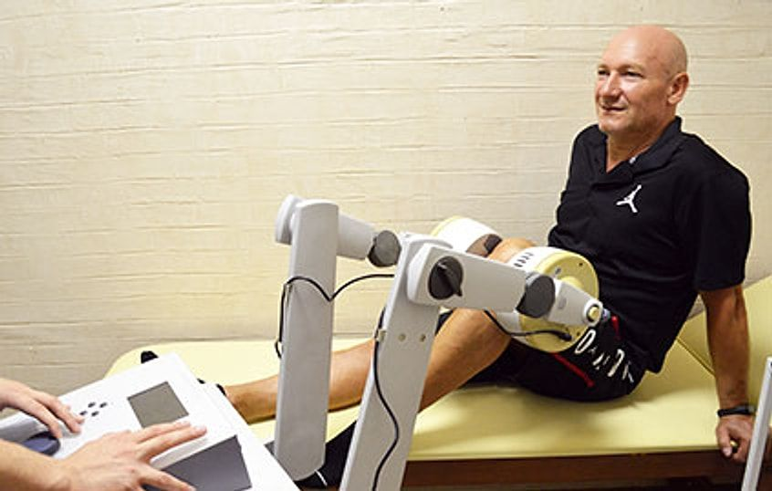
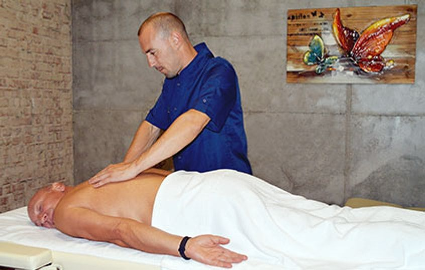
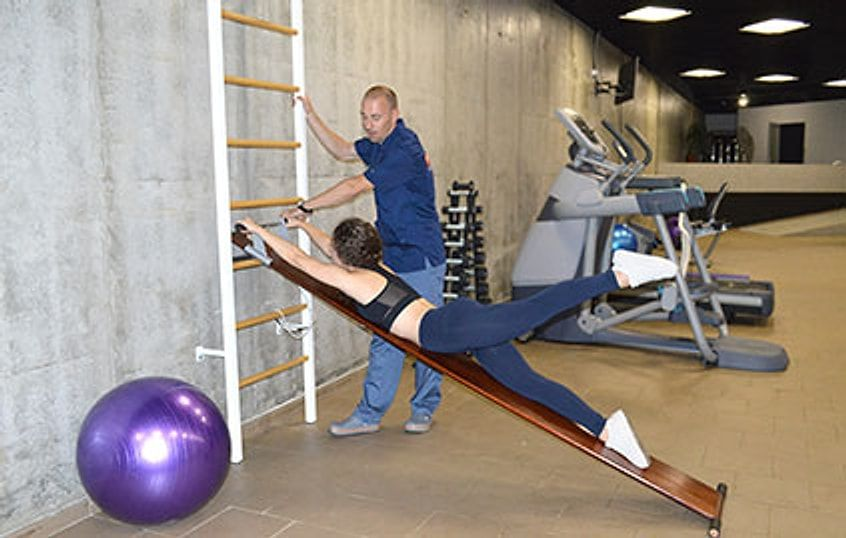
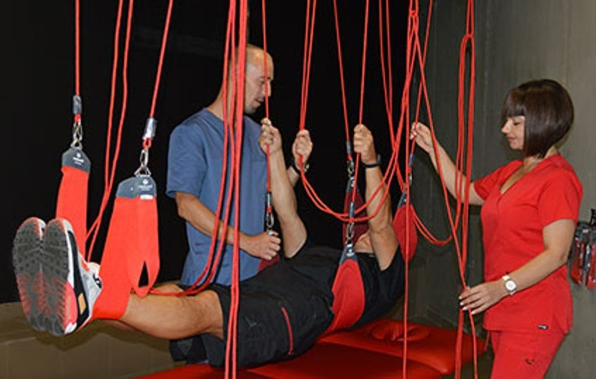
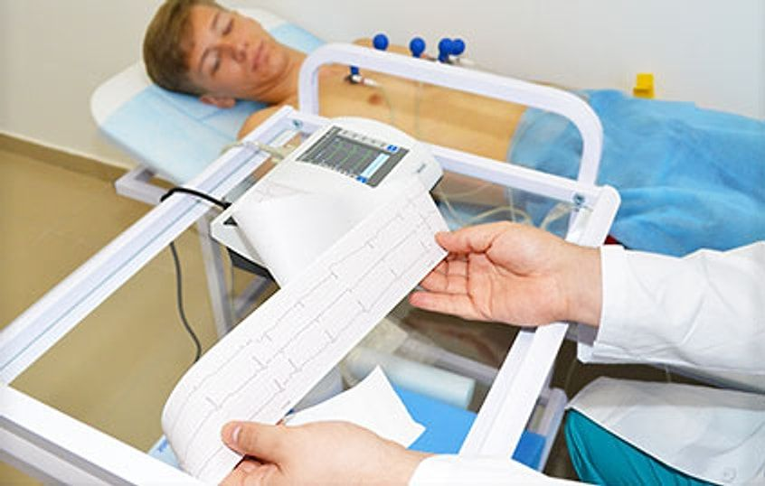
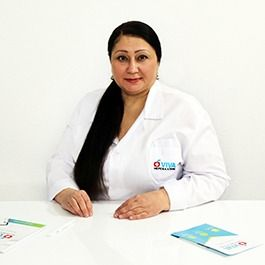

Реабілітація після операцій і травм у Києві
Центр «Сосни» мережі VIVA: стаціонар і амбулаторія, Нивки та Троєщина.
Крок 1: дзвінок
Зателефонувати 068 238 20 22міський: 044 238 20 22
Запис на консультацію за телефоном.
З чим працюємо
Знайдіть свій випадок. Програму лікар складає індивідуально після консультації.
-
Неврологічна реабілітація
- Реабілітація після інсульту
- Індивідуальна програма
Детальніше (Розділ у розробці) -
Ортопедія і хребет
- Реабілітація після операцій
- «Здоровий хребет»
- «Міжхребцева грижа»
- «Сколіоз»
Детальніше (Розділ у розробці) -
Кардіологічна реабілітація
- Індивідуальна програма
- «Здорове серце»
Детальніше (Розділ у розробці) -
Спортивна медицина
- Реабілітація після спортивних травм
- Профілактично-оздоровча програма
- Допуск до змагань
Детальніше (Розділ у розробці) -
Реабілітація військових
- Фізична і психологічна
- Програми від 7 днів
-
Профілактика і оздоровлення
- Корекція фігури: гідромасаж і ароматичні ванни
Детальніше (Розділ у розробці)
Як проходить реабілітація
Вісім кроків від першого дзвінка до супроводу після виписки.
-
Дзвінок
Зателефонуйте нам: розкажіть, що сталося, і ми підкажемо, з чого почати.
Зателефонувати 068 238 20 22 -
Запис на консультацію
Домовляємося про день і центр: Нивки чи Троєщина.
-
Консультація в центрі
Лікар оглядає вас і визначає, яка реабілітація потрібна.
-
Індивідуальна програма
Складаємо програму під ваш стан і мету.
-
Проходження реабілітації
Обирайте формат, який вам підходить.
Стаціонар
Лікування і реабілітація з проживанням у центрі.
Детальніше (Розділ у розробці)Амбулаторно
Лікування і реабілітація з візитами до центру, без проживання.
Детальніше (Розділ у розробці) -
Виписка
Завершуємо курс і пояснюємо, що робити далі вдома.
-
Профілактика і оздоровлення
Програми, які допомагають закріпити результат.
-
Супровід після реабілітації
Консультації та супровід у постреабілітаційний період.
Що входить у лікування
Процедури і місця, де проходить реабілітація в центрі.
-

Бальнеологічний комплекс
Басейн для водних процедур і вправ.
Детальніше (Розділ у розробці) -

Фізіотерапія
Детальніше (Розділ у розробці) -

Мануальна терапія і масаж
Детальніше (Розділ у розробці) -

Діагностика і лікування
Детальніше (Розділ у розробці) -

Реабілітаційна терапія
Детальніше (Розділ у розробці) -

Консультації фахівців
Детальніше (Розділ у розробці)
Реабілітація військових
Фізична і психологічна реабілітація. Програми від 7 днів.
Розкажемо про умови для військових і їхніх рідних за телефоном.
Зателефонувати 068 238 20 22Фахівці центру
Усі лікарі (Розділ у розробці)-

Краснопольська Наталія Анатоліївна
Невролог
Стаж 31 рік
-
Самусенко Ігор Валентинович
Ортопед-травматолог
Стаж 28 років
-
Юрочко Богдан Михайлович
Кардіолог, функціональна діагностика
Стаж 33 роки
-
Чернологов Денис Сергійович
Реабілітолог
Стаж 14 років
-
Матусевич Наталія Валеріївна
Реабілітолог, масажист
Стаж 18 років
Два центри в Києві
-
Нивки
Київ, вул. Огіркова, 69
Як дістатися(карта відкриється в новій вкладці) -
Троєщина
Київ, вул. Оноре де Бальзака, 85А
Як дістатися(карта відкриється в новій вкладці)
Запис в обидва центри за телефоном
- 068 238 20 22 мобільний
- 044 238 20 22 міський
- rehabilitation@viva.clinic